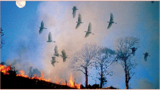
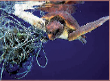
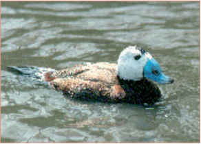

Destruccion de su hábitat
Una de las principales amenazas a las que se enfrentan los animales migratorios en peligro de extinción es la pérdida de hábitat. Este problema se manifiesta de varias maneras:
- pérdida directa de hábitat y especies – debido a mejoras agrícolas, desarrollo urbano, extracción de minerales y la forestación de superficies agrarias.
- fragmentación – la división de bloques continuos de hábitat y especies a enclaves desconectados.
- degradación – se produce cuando un hábitat ya no es administrado de manera adecuada, por ejemplo: el pastoreo excesivo en las turberas de montaña, subutilización del pasto en los montes bajos y drenaje de los humedales.
Calentamiento Global las aéreas de caza del Ártico de osos polares se están derritiendo. El hecho de encontrar aguas cálidas más allá de los trópicos significa que las especies de agua
fría se enfrentan a una mayor competencia por los alimentos porque el área de distribución de otras especies se expande y su propio hábitat preferente se vuelve más escaso. La pérdida de hábitat de la tundra de Siberia como consecuencia de un
desplazamiento hacia el norte de los bosques está teniendo un grave impacto en muchas especies que dependen de la tundra ártica para la reproducción. Un ejemplo es el Correlimos Cuchareta (Eurynorhynchus pygmeus), ya en el Apéndice I de la CMS
y se ha identificado para una acción concertada.
Desertificación la expansión de los desiertos como el Sahara está convirtiéndolos en barreras en mucho más formidables para las especies migratorias; algunas aves tienen dificultades para acumular suficientes reservas de alimentos para
llevar a cabo el cruce con éxito.
Deforestación A menudo oímos que una zona de bosque prístino del tamaño de cientos de campos de deportes o de un pequeño país ha sido destruida por el fuego (intencional o accidental) o la tala. Muchas especies raras se han perdido antes
de que los científicos hayan tenido la oportunidad de registrarlas.
Urbanización la población urbana del mundo superó el 50% por primera vez en 2007 y se prevé llegar a 5 millon o 61% en 2030. Las ciudades están invadiendo el campo. Si bien algunas especies pueden adaptarse y prosperar, otras son desplazadas
y sus números disminuyen.
Agricultura se han perdido hábitats al convertirse la tierra a uso agrícola, a menudo con un mayor uso de fertilizantes químicos y pesticidas. Con menos hábitats naturales para satisfacer sus necesidades, las búsquedas de los animales a
menudo conducen a conflictos con las personas.
Riego diques de contención de inundaciones, destinados a proteger los asentamientos humanos y tierras agrícolas, dañan algunos de los hábitats naturales que requieren de inundaciones periódicas para mantener las características requeridas
por ciertas especies. El hábitat preferido por el Ciervo de Bukhara (Cervus elaphus bactrianus), por ejemplo, se vio afectado por el riego artificial.
Contaminación la utilización de plaguicidas y fertilizantes químicos ha tenido un efecto negativo sobre muchas especies. La lluvia lava estos contaminantes hacia hábitats acuáticos, envenenando los animales o sus presas o las plantas de
las que se alimentan. Los residuos industriales, vertidos desde buques y los derrames de petróleo se suman a los problemas. Las autopsias de los cetáceos varados a menudo revelan altos niveles de contaminación por metales pesados.
La pesca incidental
 La captura incidental o captura accesoria de especies no objetivo, en la pesca, es a la vez un fenómeno común y universal. Entre una cuarta y una quinta parte de los peces capturados en todo el
mundo son simplemente arrojados por la borda - el equivalente de 20 millones de toneladas de vida marina descartadas cada año. Redes de arrastre, de cerco, jábegas y anzuelos, redes de enmalle y redes de enmalle de deriva, e incluso aparejos de
garlitos y nasas se cobran su precio en todo tipo de animales - mamíferos marinos, aves marinas, tortugas y tiburones. Las más afectadas son las especies de vida longeva, con una reproducción lenta como los cetáceos, focas, tortugas y albatros.
De hecho 19 de las 21 especies de albatros están amenazadas de extinción, y la principal amenaza a la que se enfrentan proviene de la pesca con palangre.
Además, no sólo sufren las especies; ecosistemas marinos enteros se dañan desde el momento que pierden un elemento importante de su estructura. A la vista de esta grave amenaza, la CMS ha tomado la iniciativa y sus Partes han aprobado resoluciones y recomendaciones
a sus Conferencias (Cuidad del Cabo 1999, Bonn 2002, Nairobi 2005, Roma, 2008 y Bergen 2011) pidiendo una acción inmediata de la comunidad internacional para resolver el problema y mejorar las prácticas de pesca para reducir la innecesaria muerte
de tantas especies no objetivo. Además, hay varios Acuerdos y MdE de la CMS dedicados a las especies para las que la captura accidental es una importante cuestión. Sólo recientemente la magnitud del problema de la captura accidental se ha hecho
patente. Nuestro conocimiento mejora a medida que más datos son recogidos y analizados y la cobertura por observadores de las flotas pesqueras aumenta. Sin embargo, los datos obtenidos pintan un sombrío panorama, ya que el estado de conservación
especies de clave tales como el Albatros Viajero de la Isla Macquarie (Diomedea exulans) y el Albatros de Ámsterdam (Diomedea amsterdamensis) sigue siendo alarmante - ambos están cerca de la extinción. Otro motivo de preocupación es el destino
de las tortugas marinas. A través de toda su área de distribución migratoria la captura accidental es un problema, pero al menos ahora se está empezando a actuar globalmente. Se estima que un promedio anual de 6.000 marsopas comunes (Phocoena
phocoena) han muerto como resultado de la captura accidental durante la última década en sólo las pesquerías del Mar del Norte. Pérdidas de esta magnitud son insostenibles y las poblaciones sólo se recuperarán cuando los niveles de captura accidental
caigan drásticamente.
Los animales exóticos invasores
 Hay una serie de formas naturales en las que una especie puede ampliar su área de distribución; semillas transportadas por corrientes o por aves, por ejemplo. La contribución humana al proceso, tanto
por accidente como deliberadamente, ha aumentado espectacularmente el número de casos y las consecuencias de algunas introducciones han sido devastadoras para la vida silvestre nativa.
Los conejos introducido en las islas de Laysan y Lisianski en el Pacífico durante el año 1900 dejaron las islas desprovistas de vegetación y feroces tormentas de arena enterraron nidos y rellenaron madrigueras. En dos décadas las poblaciones
de albatros patinegro (Diomedea nigripes) se colapsaron y tres aves endémicas de la zona se extinguieron antes de que los conejos finalmente se comieran unos a otros hasta prácticamente la extinción y se eliminara a los pocos que quedaban.
El ciervo rojo (Cervus elaphus) fue introducido en la Patagonia, y demostró ser agresivamente competitivo. Fueron capaces de suplantar al huemul chileno (Hippocamelus bisulcus) ien las zonas en que las dos especies vivían juntas debido
a su mayor tolerancia a las perturbaciones y adaptabilidad en relación con el uso que hacían del hábitat. Antes de ser erradicados entre 1977 y 1980, los gatos (Felis catus) asilvestrados en Isla Little Barrier (Nueva Zelandia) redujeron drásticamente
el número de pardela de Parkinson (Procellaria parkinsoni). Las especies exóticas pueden amenazar también la biodiversidad nativa a través de la hibridación. La falta de aislamiento reproductivo entre especies exóticas y especies nativas puede
causar contaminación genética, la pérdida de la diversidad genética nativa y extirpación (extinción local). La introducción de la malvasía canela de América del Norte (Oxyura jamaicensis) en Europa por los coleccionistas de especies exóticas de
aves acuáticas ha dado lugar a uno de los casos más conocidos de preocupación por las especies exóticas en relación con la conservación de una especie amenazada a nivel global, la malvasía cabeciblanca (Oxyura leucocephala). Las plantas también
pueden causar problemas ecológicos. Plantas prolíficas como la falopia japonesa (Fallopia japonica) puede acaparar las extensiones de tierra, estrangulando literalmente a la competencia, privando a los animales del hábitat y la alimentación. Al
igual que la malvasía canela, la falopia japonesa fue deliberadamente introducida en Europa a causa de sus cualidades ornamentales.
La CMS ha emprendido un estudio basado, pero no limitado, a un análisis de las amenazas que plantean las especies exóticas invasoras a los animales migratorios que figuran en los anexos de la Convención y los efectos reales y potenciales
que tienen. El estudio también examina mecanismos de prevención y control incluyendo medidas que ya se están ejecutando y otras bajo consideración. La membresía de la Convención insta a las Partes a tomar medidas para evitar que las especies alóctonas,
como las especies exóticas pueden ser también descritas, pongan en peligro a las especies migratorias que figuran en el Apéndice I. Si bien la mejor protección contra las especies exóticas is es mantener la vigilancia para evitar su introducción,
es a menudo más fácil decirlo que hacerlo. Los programas de erradicación y control eficaces sólo han resultado posibles en una serie de casos